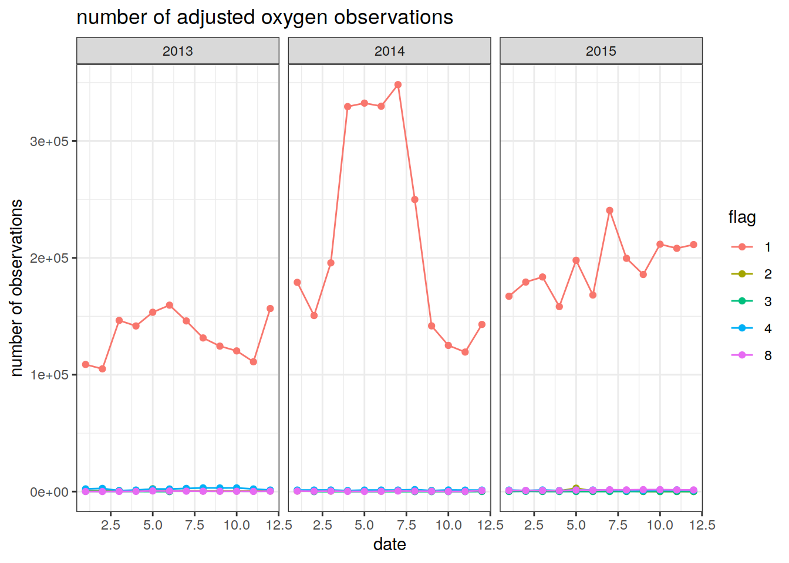
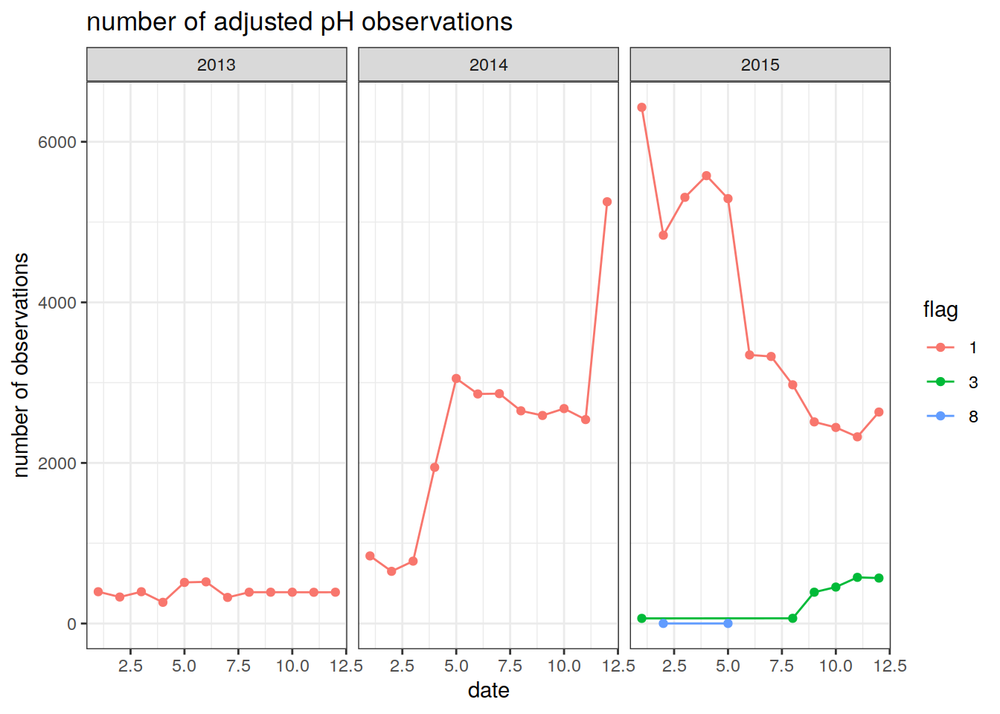
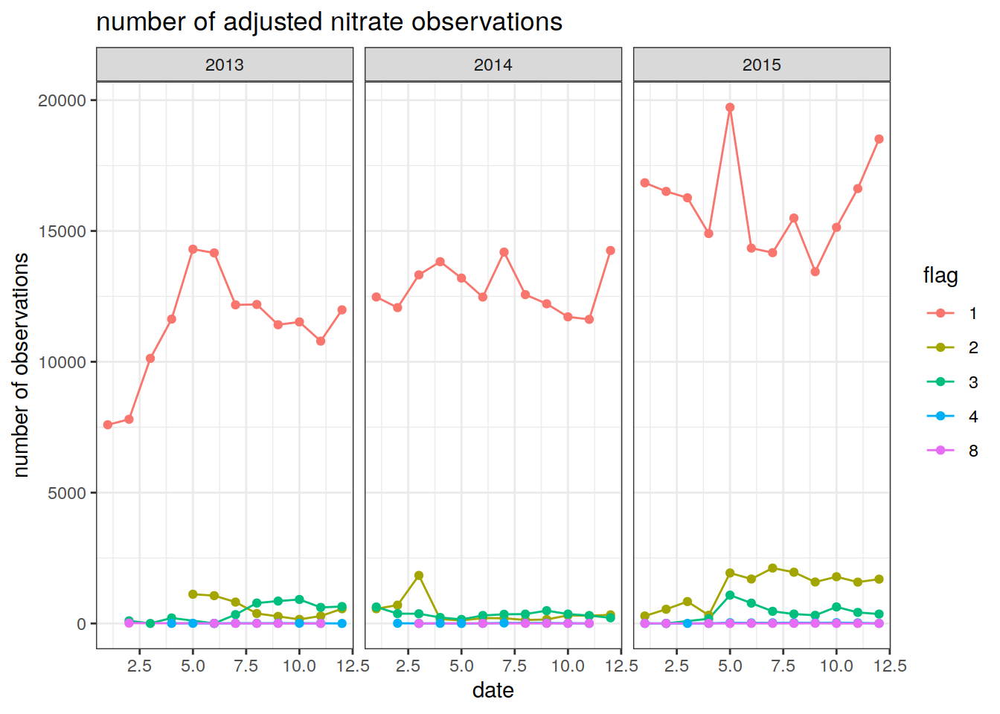
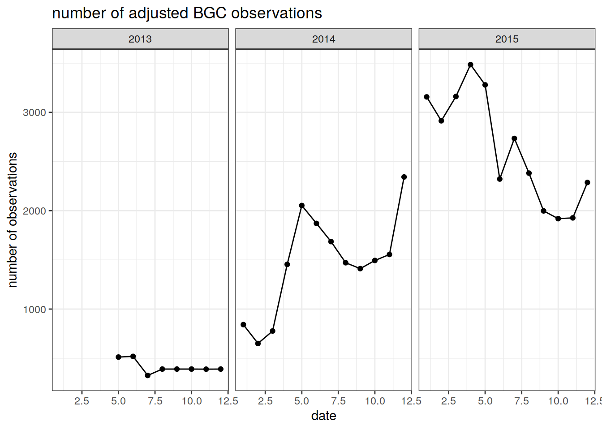
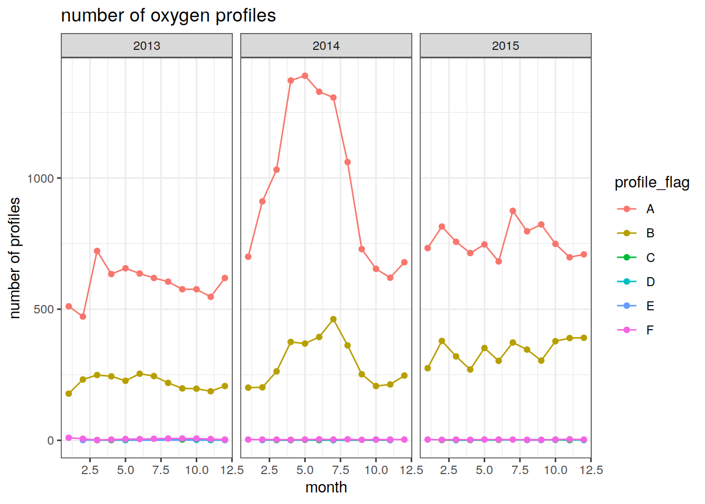
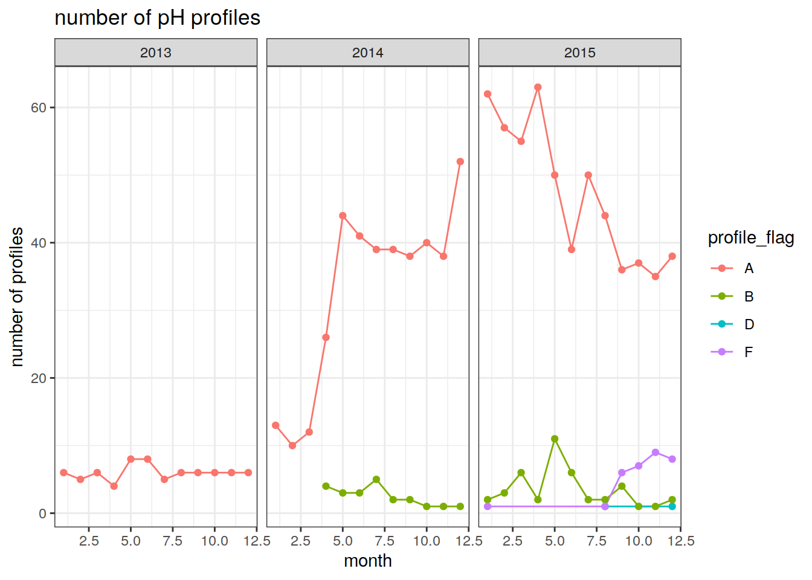
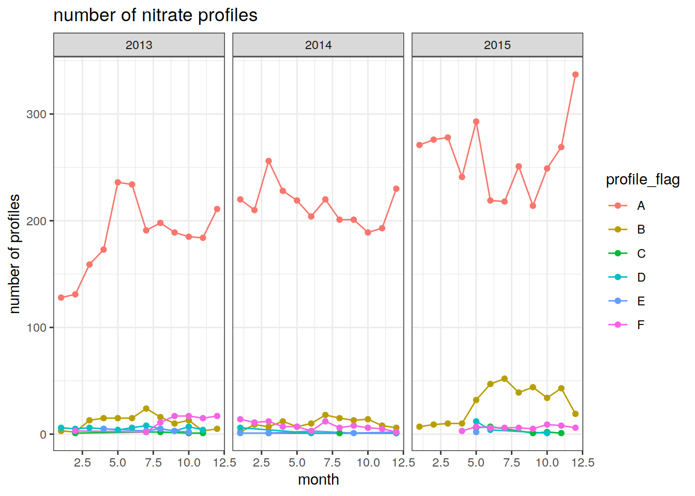
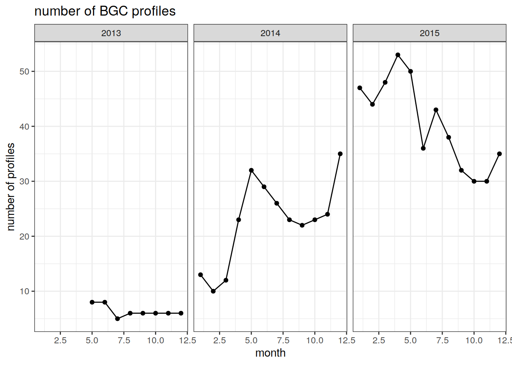

Last updated: 2021-10-13
Checks: 7 0
Knit directory: bgc_argo_r_argodata/
This reproducible R Markdown analysis was created with workflowr (version 1.6.2). The Checks tab describes the reproducibility checks that were applied when the results were created. The Past versions tab lists the development history.
Great! Since the R Markdown file has been committed to the Git repository, you know the exact version of the code that produced these results.
Great job! The global environment was empty. Objects defined in the global environment can affect the analysis in your R Markdown file in unknown ways. For reproduciblity it’s best to always run the code in an empty environment.
The command set.seed(20211008) was run prior to running the code in the R Markdown file. Setting a seed ensures that any results that rely on randomness, e.g. subsampling or permutations, are reproducible.
Great job! Recording the operating system, R version, and package versions is critical for reproducibility.
Nice! There were no cached chunks for this analysis, so you can be confident that you successfully produced the results during this run.
Great job! Using relative paths to the files within your workflowr project makes it easier to run your code on other machines.
Great! You are using Git for version control. Tracking code development and connecting the code version to the results is critical for reproducibility.
The results in this page were generated with repository version d8616e1. See the Past versions tab to see a history of the changes made to the R Markdown and HTML files.
Note that you need to be careful to ensure that all relevant files for the analysis have been committed to Git prior to generating the results (you can use wflow_publish or wflow_git_commit). workflowr only checks the R Markdown file, but you know if there are other scripts or data files that it depends on. Below is the status of the Git repository when the results were generated:
Ignored files:
Ignored: .Rhistory
Ignored: .Rproj.user/
Untracked files:
Untracked: code/creating_dataframe.R
Untracked: code/creating_map.R
Note that any generated files, e.g. HTML, png, CSS, etc., are not included in this status report because it is ok for generated content to have uncommitted changes.
These are the previous versions of the repository in which changes were made to the R Markdown (analysis/count_observations.Rmd) and HTML (docs/count_observations.html) files. If you’ve configured a remote Git repository (see ?wflow_git_remote), click on the hyperlinks in the table below to view the files as they were in that past version.
| File | Version | Author | Date | Message |
|---|---|---|---|---|
| Rmd | d8616e1 | pasqualina-vonlanthendinenna | 2021-10-13 | added timeseries of all 3 bgc variables |
| html | 795b5ad | pasqualina-vonlanthendinenna | 2021-10-13 | Build site. |
| Rmd | 81f5ac9 | pasqualina-vonlanthendinenna | 2021-10-13 | added timeseries of all 3 bgc variables |
| html | 4840e49 | pasqualina-vonlanthendinenna | 2021-10-12 | Build site. |
| Rmd | 2fb35f7 | pasqualina-vonlanthendinenna | 2021-10-12 | added reading data in page |
Count the number of bgc-argo observations, and plot the evolution over time.
Use the same process as in loading_data.Rmd to load in bgc-argo data and the corresponding metadata:
library(tidyverse)── Attaching packages ─────────────────────────────────────── tidyverse 1.3.0 ──✓ ggplot2 3.3.5 ✓ purrr 0.3.4
✓ tibble 3.1.3 ✓ dplyr 1.0.5
✓ tidyr 1.1.3 ✓ stringr 1.4.0
✓ readr 1.4.0 ✓ forcats 0.5.0── Conflicts ────────────────────────────────────────── tidyverse_conflicts() ──
x dplyr::filter() masks stats::filter()
x dplyr::lag() masks stats::lag()# remotes::install_github("ArgoCanada/argodata")
library(argodata)
library(ggplot2)
library(lubridate)
Attaching package: 'lubridate'The following objects are masked from 'package:base':
date, intersect, setdiff, unionargo_set_cache_dir('/nfs/kryo/work/updata/bgc_argo_r_argodata')
argo_update_global(max_global_cache_age = Inf)
argo_update_data(max_data_cache_age = Inf) # the arguments max_global_cache_age and max_data_cache_age indicate the age of the cached files to update (in hours) (Inf means always use the cached file, and -Inf means always download from the server)
# e.g. if max_global_cache_age = 5, then files older than 5 hours will be updated
bgc_subset = argo_global_synthetic_prof() %>%
argo_filter_data_mode(data_mode = 'delayed') %>%
argo_filter_date(date_min = '2013-01-01',
date_max = '2015-12-31') # download bgc-argo files containing delayed-mode data (recommended for bgc variables) between January 1, 2013 and December 31, 2015 (selects this specific subset of the cached files) Loading argo_global_synthetic_prof()# check the dates
# max(bgc_subset$date, na.rm = TRUE)
# min(bgc_subset$date, na.rm = TRUE)
bgc_data = argo_prof_levels(bgc_subset,
vars = c('PRES_ADJUSTED','PRES_ADJUSTED_QC',
'PSAL_ADJUSTED', 'PSAL_ADJUSTED_QC',
'TEMP_ADJUSTED','TEMP_ADJUSTED_QC',
'DOXY_ADJUSTED', 'DOXY_ADJUSTED_QC',
'NITRATE_ADJUSTED', 'NITRATE_ADJUSTED_QC',
'PH_IN_SITU_TOTAL_ADJUSTED', 'PH_IN_SITU_TOTAL_ADJUSTED_QC'), quiet = TRUE)
# read in the profiles of the delayed-mode data from 01/01/2013 to 31/12/2015 (takes a while)
bgc_metadata = argo_prof_prof(bgc_subset) # read in the metadata corresponding to these profiles Extracting from 54117 filesfull_data = left_join(bgc_data, bgc_metadata, by = c('file', 'n_prof')) # join data and metadata together Create a separate dataframe for each BGC variable (oxygen, pH and nitrate), with longitude, latitude, value, qc flag, date, time, year, month, day, cycle number, float ID, and profile qc flag, and look at the evolution of the number of observations (any depth levels) and the number of profiles (depth levels 0-2000 m) over time.
QC flags for values (‘flag’ column) are between 1 and 8, where: 1 is ‘good’ data, 2 is ‘probably good’ data, 3 is ‘probably bad’ data, 4 is ‘bad’ data, 5 is ‘value changed’, 6 is not used, 7 is not used, 8 is ‘estimated value’, 9 is ‘missing value’.
Profile QC flags (‘profile_flag’ column) are QC codes attributed to the entire profile, and indicate the number of depth levels (in %) where the value is considered to be good data (QC flags of 1, 2, 5, and 8):
‘A’ means 100% of profile levels contain good data, ‘B’ means 75-<100% of profile levels contain good data, ‘C’ means 50-75% of profile levels contain good data, ‘D’ means 25-50% of profile levels contain good data, ‘E’ means >0-50% of profile levels contain good data, ‘F’ means 0% of profile levels contain good data.
1.1 Oxygen
oxy = data.frame(full_data$longitude, full_data$latitude, full_data$date, full_data$doxy_adjusted, full_data$doxy_adjusted_qc) # extract desired variables from the combined data/metadata dataframe
colnames(oxy) = c('longitude','latitude','date', 'doxy_adjusted', 'flag') # add column names
oxy$date.simple = as.Date(oxy$date) # separate the date and time into two columns
oxy$time = format(oxy$date, '%H:%M:%S')
oxy = oxy %>% # separate the date into year, month and day
mutate(year = year(date.simple),
month = month(date.simple),
day = day(date.simple),
cycle = full_data$cycle_number,
float_ID = full_data$float_serial_no,
profile_flag = full_data$profile_doxy_qc) # add cycle number, float ID and profile qc flag to the dataframe
oxy.no.na = oxy %>%
filter(!is.na(doxy_adjusted)) # remove NA values
num_obs_oxy = oxy.no.na %>%
group_by(year, month, flag) %>%
summarise(Count = n()) # count the number of oxygen observations by month`summarise()` has grouped output by 'year', 'month'. You can override using the `.groups` argument.The number of observations can then be plotted as a timeseries. Different colored lines are plotted for different quality control flags
# plot the number of oxygen observations per day
ggplot(num_obs_oxy, aes(x = month, y = Count, group = flag, col = flag)) +
geom_line() +
geom_point() +
facet_wrap(~ year) +
labs(title = 'number of adjusted oxygen observations',
y = 'number of observations',
x = 'date') +
theme_bw()
| Version | Author | Date |
|---|---|---|
| 4840e49 | pasqualina-vonlanthendinenna | 2021-10-12 |
1.2 pH
ph = data.frame(full_data$longitude, full_data$latitude, full_data$date, full_data$ph_in_situ_total_adjusted, full_data$ph_in_situ_total_adjusted_qc)
# extract the variables from the combined data/metadata frame
colnames(ph) = c('longitude','latitude','date', 'ph_in_situ_total', 'flag')
# rename columns
ph$date.simple = as.Date(ph$date)
ph$time = format(ph$date, '%H:%M:%S') # separate date and time into two separate columns
ph = ph %>%
mutate(year = year(date.simple),
month = month(date.simple),
day = day(date.simple),
cycle = full_data$cycle_number,
float_ID = full_data$float_serial_no,
profile_flag = full_data$profile_ph_in_situ_total_qc) # separate year, month and day, and add cycle number, float ID and profile qc flag
ph.no.na = ph %>%
filter(!is.na(ph_in_situ_total)) # remove NA values
num_obs_ph = ph.no.na %>%
group_by(year, month, flag) %>%
summarise(Count = n()) # count the number of observations per month `summarise()` has grouped output by 'year', 'month'. You can override using the `.groups` argument.We can then plot the number of pH observations in a timeseries. Different lines are plotted for different quality control flags
ggplot(num_obs_ph, aes(x = month, y = Count, group = flag, col = flag)) +
geom_line() +
geom_point() +
facet_wrap(~year) +
labs(title = 'number of adjusted pH observations',
y = 'number of observations',
x = 'date') +
theme_bw()
| Version | Author | Date |
|---|---|---|
| 4840e49 | pasqualina-vonlanthendinenna | 2021-10-12 |
1.3 Nitrate
nitrate = data.frame(full_data$longitude, full_data$latitude, full_data$date, full_data$nitrate_adjusted, full_data$nitrate_adjusted_qc) # extract nitrate from the combined data/metadata dataframe
colnames(nitrate) = c('longitude','latitude', 'date', 'nitrate_adjusted', 'flag')
# rename columns
nitrate$date.simple = as.Date(nitrate$date)
nitrate$time = format(nitrate$date, '%H:%M:%S') # separate the date into date and time columns
nitrate = nitrate %>%
mutate(year = year(date.simple),
month = month(date.simple),
day = day(date.simple),
cycle = full_data$cycle_number,
float_ID = full_data$float_serial_no,
profile_flag = full_data$profile_nitrate_qc) # separate year, month, and day, and add cycle number, float ID, and the profile qc flag
nitrate.no.na = nitrate %>%
filter(!is.na(nitrate_adjusted)) # remove NA values
num_obs_nitrate = nitrate.no.na %>%
group_by(year, month, flag) %>%
summarise(Count = n()) # count the number of nitrate observations per month `summarise()` has grouped output by 'year', 'month'. You can override using the `.groups` argument.Plot the number of nitrate observations per month as a timeseries. Different lines are plotted for different qc flags
ggplot(num_obs_nitrate, aes(x = month, y = Count, group = flag, col = flag))+
geom_line()+
geom_point()+
facet_wrap(~ year)+
labs(title = 'number of adjusted nitrate observations',
y = 'number of observations',
x = 'date') +
theme_bw()
| Version | Author | Date |
|---|---|---|
| 4840e49 | pasqualina-vonlanthendinenna | 2021-10-12 |
1.4 All BGC variables (oxygen, pH, and nitrate) We can count the number of observations for which all three BGC variables exist. (QC flags cannot be included since they are specific to one variable)
# create a dataframe which contains all three variables, with longitude, latitude, date, cycle number and float ID
bgc_co_located = data.frame(full_data$longitude, full_data$latitude,
full_data$date,
full_data$cycle_number,
full_data$float_serial_no,
full_data$doxy_adjusted,
full_data$ph_in_situ_total_adjusted,
full_data$nitrate_adjusted)
colnames(bgc_co_located) = c('longitude', 'latitude',
'date',
'cycle',
'float_ID',
'doxy_adjusted',
'ph_in_situ_total_adjusted',
'nitrate_adjusted') # rename the columns
bgc_co_located = bgc_co_located %>% # change the date and time format
mutate(date.simple = as.Date(date),
time = format(date, '%H:%M:%S'),
year = year(date.simple),
month = month(date.simple),
day = day(date.simple))
bgc_co_located.no.na = bgc_co_located %>% # remove NA values for each variable
filter(!is.na(doxy_adjusted)) %>%
filter(!is.na(ph_in_situ_total_adjusted)) %>%
filter(!is.na(nitrate_adjusted))
# removes rows of pH and nitrate for which there is no oxygen, rows of oxygen and nitrate for which there is no pH, and rows of oxygen and pH for which there is no nitrate
# count the number of observations left for each year and month
num_obs_bgc = bgc_co_located.no.na %>%
group_by(year, month) %>%
summarise(Count = n()) `summarise()` has grouped output by 'year'. You can override using the `.groups` argument.We can then plot the evolution over time of the number of BGC observations containing all three variables
ggplot(num_obs_bgc, aes(x = month, y = Count))+
geom_line()+
geom_point()+
facet_wrap(~ year)+
labs(title = 'number of adjusted BGC observations',
y = 'number of observations',
x = 'date') +
theme_bw()
| Version | Author | Date |
|---|---|---|
| 795b5ad | pasqualina-vonlanthendinenna | 2021-10-13 |
Using the dataframes created above for oxygen, pH, and nitrate, we can also look at the number of profiles over time for each variable. (One profile has multiple depth levels, between 0-2000 m)
2.1 Oxygen
prof_oxy = oxy.no.na %>%
group_by(float_ID, cycle, profile_flag, year, month) %>%
summarise(num_obs = n()) # count the number of oxygen observations for each float and cycle`summarise()` has grouped output by 'float_ID', 'cycle', 'profile_flag', 'year'. You can override using the `.groups` argument.prof_oxy = prof_oxy %>%
mutate(prof = rep(1, length(cycle))) # repeat a vector of 1s for each individual cycle (one cycle corresponds to one profile)
num_prof_oxy = prof_oxy %>%
group_by(year, month, profile_flag) %>%
summarise(count_prof = n()) # count the number of 1s (profiles)`summarise()` has grouped output by 'year', 'month'. You can override using the `.groups` argument.Plot the evolution of the number of oxygen profiles over time
ggplot(num_prof_oxy, aes(x = month, y = count_prof, group = profile_flag, col = profile_flag)) +
geom_line() +
geom_point() +
facet_wrap(~ year, ncol = 3) +
labs(title = 'number of oxygen profiles',
y = 'number of profiles',
x = 'month') +
theme_bw()
| Version | Author | Date |
|---|---|---|
| 4840e49 | pasqualina-vonlanthendinenna | 2021-10-12 |
2.2 pH
prof_ph = ph.no.na %>%
group_by(float_ID, cycle, profile_flag, year, month) %>%
summarise(num_obs = n()) # count the number of ph observations by float and cycle`summarise()` has grouped output by 'float_ID', 'cycle', 'profile_flag', 'year'. You can override using the `.groups` argument.prof_ph = prof_ph %>%
mutate(prof = rep(1, length(cycle))) # repeat a vector of 1s over the length of the cycles (one cycle corresponds to one pH profile)
num_prof_ph = prof_ph %>%
group_by(year, month, profile_flag) %>%
summarise(count_prof = n()) # count the number of 1s (profiles)`summarise()` has grouped output by 'year', 'month'. You can override using the `.groups` argument.Plot the number of pH profiles over time
ggplot(num_prof_ph, aes(x = month, y = count_prof, group = profile_flag, col = profile_flag)) +
geom_line() +
geom_point() +
facet_wrap(~ year, ncol = 3) +
labs(title = 'number of pH profiles',
y = 'number of profiles',
x = 'month') +
theme_bw()
| Version | Author | Date |
|---|---|---|
| 4840e49 | pasqualina-vonlanthendinenna | 2021-10-12 |
2.3 Nitrate
prof_nitrate = nitrate.no.na %>%
group_by(float_ID, cycle, profile_flag, year, month) %>%
summarise(num_obs = n()) # count the number of nitrate observations by float and cycle`summarise()` has grouped output by 'float_ID', 'cycle', 'profile_flag', 'year'. You can override using the `.groups` argument.prof_nitrate = prof_nitrate %>%
mutate(prof = rep(1, length(cycle))) # repeat a vector of 1s over the length of cycle numbers (one cycle is one profile)
num_prof_nitrate = prof_nitrate %>%
group_by(year, month, profile_flag) %>%
summarise(count_prof = n()) # count the number of 1s (profiles)`summarise()` has grouped output by 'year', 'month'. You can override using the `.groups` argument.Plot the number of nitrate profiles over time
ggplot(num_prof_nitrate, aes(x = month, y = count_prof, group = profile_flag, col = profile_flag)) +
geom_line() +
geom_point() +
facet_wrap(~ year, ncol = 3) +
labs(title = 'number of nitrate profiles',
y = 'number of profiles',
x = 'month') +
theme_bw()
| Version | Author | Date |
|---|---|---|
| 4840e49 | pasqualina-vonlanthendinenna | 2021-10-12 |
2.4 All BGC variables (oxygen, pH, and nitrate) We can count the number of profiles which contain all three variables. ( Profile QC flags cannot be included since they are specific to one variable)
# count the number of profiles for which all three variables exist
prof_bgc = bgc_co_located.no.na %>%
group_by(float_ID, cycle, year, month) %>%
summarise(num_obs = n()) # count the number of observations by float and cycle number`summarise()` has grouped output by 'float_ID', 'cycle', 'year'. You can override using the `.groups` argument.prof_bgc = prof_bgc %>%
mutate(prof = rep(1, length(cycle))) # repeat a vector of 1s over the number of cycles
num_prof_bgc = prof_bgc %>%
group_by(year, month) %>%
summarise(count_prof = n()) # count the number of 1s `summarise()` has grouped output by 'year'. You can override using the `.groups` argument.Plot the number of BGC profiles for which all three variables exist over time
ggplot(num_prof_bgc, aes(x = month, y = count_prof)) +
geom_line() +
geom_point() +
facet_wrap(~ year) +
labs(title = 'number of BGC profiles',
y = 'number of profiles',
x = 'month') +
theme_bw()
sessionInfo()R version 4.0.3 (2020-10-10)
Platform: x86_64-pc-linux-gnu (64-bit)
Running under: openSUSE Leap 15.2
Matrix products: default
BLAS: /usr/local/R-4.0.3/lib64/R/lib/libRblas.so
LAPACK: /usr/local/R-4.0.3/lib64/R/lib/libRlapack.so
locale:
[1] LC_CTYPE=en_US.UTF-8 LC_NUMERIC=C
[3] LC_TIME=en_US.UTF-8 LC_COLLATE=en_US.UTF-8
[5] LC_MONETARY=en_US.UTF-8 LC_MESSAGES=en_US.UTF-8
[7] LC_PAPER=en_US.UTF-8 LC_NAME=C
[9] LC_ADDRESS=C LC_TELEPHONE=C
[11] LC_MEASUREMENT=en_US.UTF-8 LC_IDENTIFICATION=C
attached base packages:
[1] stats graphics grDevices utils datasets methods base
other attached packages:
[1] lubridate_1.7.9 argodata_0.0.0.9000 forcats_0.5.0
[4] stringr_1.4.0 dplyr_1.0.5 purrr_0.3.4
[7] readr_1.4.0 tidyr_1.1.3 tibble_3.1.3
[10] ggplot2_3.3.5 tidyverse_1.3.0 workflowr_1.6.2
loaded via a namespace (and not attached):
[1] Rcpp_1.0.7 prettyunits_1.1.1 assertthat_0.2.1 rprojroot_2.0.2
[5] digest_0.6.27 utf8_1.2.2 R6_2.5.1 cellranger_1.1.0
[9] backports_1.1.10 reprex_0.3.0 evaluate_0.14 highr_0.8
[13] httr_1.4.2 pillar_1.6.2 progress_1.2.2 rlang_0.4.11
[17] readxl_1.3.1 rstudioapi_0.13 whisker_0.4 jquerylib_0.1.4
[21] blob_1.2.1 rmarkdown_2.10 labeling_0.4.2 bit_4.0.4
[25] munsell_0.5.0 broom_0.7.9 compiler_4.0.3 httpuv_1.6.2
[29] modelr_0.1.8 xfun_0.25 pkgconfig_2.0.3 htmltools_0.5.1.1
[33] tidyselect_1.1.0 fansi_0.5.0 tzdb_0.1.2 crayon_1.4.1
[37] dbplyr_1.4.4 withr_2.4.2 later_1.3.0 grid_4.0.3
[41] jsonlite_1.7.2 gtable_0.3.0 lifecycle_1.0.0 DBI_1.1.1
[45] git2r_0.27.1 magrittr_2.0.1 scales_1.1.1 vroom_1.5.5
[49] cli_3.0.1 stringi_1.5.3 farver_2.1.0 fs_1.5.0
[53] promises_1.2.0.1 xml2_1.3.2 bslib_0.2.5.1 ellipsis_0.3.2
[57] generics_0.1.0 vctrs_0.3.8 tools_4.0.3 bit64_4.0.5
[61] glue_1.4.2 RNetCDF_2.4-2 hms_0.5.3 parallel_4.0.3
[65] yaml_2.2.1 colorspace_2.0-2 rvest_0.3.6 knitr_1.33
[69] haven_2.3.1 sass_0.4.0